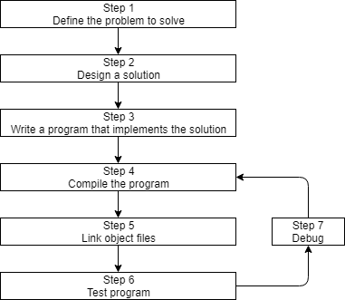

0.4 — Introduction au développement en C++
Avant de pouvoir écrire et exécuter notre premier programme C++, nous devons comprendre plus en détail comment les programmes C++ sont développés. Voici un schéma qui présente une approche simplifiée :

Étape 1 : définir le problème que vous souhaitez résoudre
C'est l'étape du « quoi », où vous déterminez le problème que vous voulez résoudre. Trouver l'idée initiale de ce que vous aimeriez programmer peut être l'étape la plus facile, ou la plus difficile. Mais sur le plan conceptuel, c'est la plus simple. Il vous suffit d'une idée bien définie, et vous êtes prêt pour l'étape suivante.
Voici quelques exemples :
- « Je veux écrire un programme qui me permettra de saisir plusieurs nombres, puis qui calculera leur moyenne. »
- « Je veux écrire un programme qui génère un labyrinthe en 2D et permet à l'utilisateur de s'y déplacer. L'utilisateur gagne s'il atteint la sortie. »
- « Je veux écrire un programme qui lit un fichier de cours boursiers et prédit si l'action va monter ou descendre. »
Étape 2 : déterminer comment vous allez résoudre le problème
C'est l'étape du « comment », où vous déterminez la manière de résoudre le problème identifié à l'étape 1. C'est aussi l'étape la plus négligée dans le développement logiciel. Le nœud du problème est qu'il existe de nombreuses façons de résoudre un problème, mais que certaines solutions sont bonnes et d'autres mauvaises. Trop souvent, un programmeur a une idée, s'assoit et commence immédiatement à coder une solution. Cela produit fréquemment une solution qui appartient à la catégorie des mauvaises.
En général, les bonnes solutions présentent les caractéristiques suivantes :
- Elles sont simples (ni trop compliquées, ni confuses).
- Elles sont bien documentées (notamment en ce qui concerne les hypothèses formulées et les limitations).
- Elles sont construites de manière modulaire, de sorte que certaines parties puissent être réutilisées ou modifiées plus tard sans affecter les autres parties du programme.
- Elles savent se rétablir avec élégance ou fournir des messages d'erreur utiles lorsque quelque chose d'inattendu se produit.
Lorsque vous vous asseyez et commencez à coder immédiatement, vous pensez généralement « je veux faire quelque chose », et vous implémentez la solution qui vous y mène le plus rapidement. Cela peut conduire à des programmes fragiles, difficiles à modifier ou à étendre par la suite, ou truffés de bugs. Un bug (bogue) est toute erreur de programmation qui empêche le programme de fonctionner correctement.
En passant…
Le terme bug (bogue) a été utilisé pour la première fois par Thomas Edison dans les années 1870 ! Cependant, il s'est popularisé dans les années 1940, lorsque des ingénieurs ont trouvé un véritable papillon de nuit coincé dans le matériel d'un des premiers ordinateurs, provoquant un court-circuit. Le journal de bord dans lequel l'erreur a été consignée, ainsi que le papillon, font aujourd'hui partie des collections du Musée national d'histoire américaine de la Smithsonian Institution. On peut les consulter ici.
Diverses études ont montré que, pour les systèmes logiciels complexes, seulement 10 à 40 % du temps d'un programmeur est réellement consacré à l'écriture du programme initial. Les 60 à 90 % restants sont consacrés à la maintenance, qui peut consister en du débogage (suppression des bugs), en des mises à jour destinées à s'adapter à des changements de l'environnement (par exemple pour fonctionner sur une nouvelle version d'un système d'exploitation), en des améliorations (modifications mineures visant à accroître la facilité d'utilisation ou les capacités), ou en des améliorations internes (pour accroître la fiabilité ou la maintenabilité)1.
Par conséquent, il vaut la peine de consacrer un peu de temps en amont (avant de commencer à coder) à réfléchir à la meilleure façon d'aborder un problème, aux hypothèses que vous formulez et à la manière dont vous pourriez anticiper l'avenir, afin de vous épargner beaucoup de temps et de tracas par la suite.
Nous reviendrons plus en détail sur la manière de concevoir efficacement des solutions à des problèmes dans une future leçon.
Étape 3 : écrire le programme
Pour écrire le programme, nous avons besoin de deux choses. D'abord, nous avons besoin de connaissances dans un langage de programmation : c'est précisément à cela que servent ces tutoriels ! Ensuite, nous avons besoin d'un éditeur de texte pour écrire et enregistrer nos programmes C++. L'ensemble des instructions C++ que nous saisissons dans l'éditeur de texte s'appelle le code source (souvent abrégé simplement en code). Il est possible d'écrire un programme avec n'importe quel éditeur de texte, même un outil aussi simple que le Bloc-notes de Windows, ou vi ou pico sous Unix.
Un programme saisi dans un éditeur de texte basique ressemblerait à ceci :
#include <iostream>
int main()
{
std::cout << "Here is some text.";
return 0;
}
Nous vous conseillons toutefois vivement d'utiliser un éditeur conçu pour la programmation (appelé éditeur de code). Ne vous inquiétez pas si vous n'en avez pas encore un. Nous verrons bientôt comment en installer un.
Un éditeur de code typique offre quelques fonctionnalités qui rendent la programmation beaucoup plus facile, notamment :
- La numérotation des lignes. Elle est utile lorsque le compilateur nous signale une erreur, car un message d'erreur typique indique : un code/message d'erreur, ligne 64. Sans un éditeur qui affiche les numéros de lignes, trouver la ligne 64 peut être un véritable casse-tête.
- La coloration syntaxique. Elle modifie la couleur de différentes parties de votre programme afin de faciliter l'identification de ses différents composants.
- Une police à chasse fixe, non ambiguë (souvent appelée « police à espacement fixe » ou « police monospace »). Les polices non destinées à la programmation rendent souvent difficile la distinction entre le chiffre 0 et la lettre O, ou entre le chiffre 1, la lettre l (L minuscule) et la lettre I (i majuscule). Une bonne police de programmation garantit que ces symboles sont visuellement différenciés, afin d'éviter que l'un ne soit utilisé par erreur à la place de l'autre. Tous les éditeurs de code devraient activer cette option par défaut, mais un éditeur de texte standard pourrait ne pas la proposer. L'utilisation d'une police à chasse fixe (où tous les symboles ont la même largeur) facilite la mise en forme et l'alignement correct de votre code.
Voici un exemple de programme C++ avec numérotation des lignes, coloration syntaxique et police à chasse fixe :
#include <iostream>
int main()
{
std::cout << "Here is some text.";
return 0;
}
Remarquez à quel point ce programme est plus facile à comprendre que la version sans coloration. Le code source présenté dans ce tutoriel comportera à la fois la numérotation des lignes et la coloration syntaxique, afin de faciliter sa lecture.
Astuce
Coding Font et Programming Fonts proposent tous deux des outils intéressants permettant de comparer différentes polices de programmation afin de voir celles que vous préférez.
Pour les lecteurs avancés
Comme le code source est écrit avec des caractères ASCII, les langages de programmation utilisent un certain art ASCII pour représenter des concepts mathématiques. Par exemple, ≠ ne fait pas partie du jeu de caractères ASCII ; les langages de programmation utilisent donc généralement != pour représenter l'inégalité mathématique.
Certaines polices de programmation, comme Fira Code, utilisent des ligatures pour recombiner cet « art » en un seul caractère. Par exemple, au lieu d'afficher !=, Fira Code affichera ≠ (avec la même largeur que la version à deux caractères). Certaines personnes trouvent cela plus lisible, d'autres préfèrent s'en tenir à une interprétation plus littérale des caractères sous-jacents.
De nombreux programmes C++ simples ne comportent qu'un seul fichier de code source, mais les programmes C++ complexes peuvent en compter des centaines, voire des milliers.
Chaque fichier de code source de votre programme doit être enregistré sur le disque, ce qui signifie qu'il lui faut un nom de fichier. C++ n'impose aucune contrainte particulière sur le nommage des fichiers. Cependant, la convention de fait consiste à nommer le premier fichier source, ou fichier source principal, d'un programme main.cpp. Le nom (main) permet de repérer facilement le fichier source principal, et l'extension .cpp indique qu'il s'agit d'un fichier source C++.
Vous pourrez parfois rencontrer un fichier source principal portant le nom du programme (par exemple calculator.cpp, poker.cpp). Vous pourrez aussi occasionnellement voir d'autres extensions (par exemple .cc ou .cxx).
Bonne pratique
Nommez le premier fichier source principal de chaque programme main.cpp. Cela permet de repérer facilement le fichier source principal.
Une fois votre programme écrit, les étapes suivantes consistent à convertir le code source en quelque chose qui peut être exécuté, puis à vérifier s'il fonctionne ! Nous aborderons ces étapes (4 à 7) dans la prochaine leçon.
Source originale : https://www.learncpp.com/cpp-tutorial/introduction-to-cpp-development/